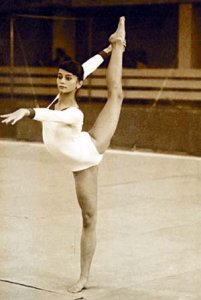

Eva Kanyo (HUN)
1978 Hungarian International AA Champion

Competition Results
1976
Antibes International: 8th AA
GEO-HUN Dual Meet: 1st Team, 1st AA
Jr. Friendship Tournament (Druzhba): 3rd Team, 1st B
1977
Budapest Championships: 2nd AA, 1st B, 1st FX, 3rd V
Coca-Cola International: 4th AA
Hungarian Masters Tournament: 3rd AA, 3rd FX
Hungarian International: 1st AA, 1st B
Jr. CSSR-HUN Dual Meet: 3rd AA
Jr. Friendship Tournament (Druzhba): 3rd Team
NED-HUN Dual Meet: 1st Team, 1st AA
1978
Chunichi Cup: 9th AA
FRA-HUN-TCH-POL Meet: 1st Team, 3rd AA
GBR-HUN Dual Meet: 1st Team, 1st AA
GDR-HUN Dual Meet: 2nd Team, 3rd AA
HOL-HUN Dual Meet: 1st Team, 1st AA
Hungarian Championships: 3rd AA
Hungarian Masters Tournament: 6th AA
Moscow News: 14th AA,
Riga International: 6th B
SUI-HUN Dual Meet: 1st Team, 4th AA
World Championships: 4th Team, 19th AA, 7th B
World Cup: 12th AA, 6th UB
1979
GBR-HUN Dual Meet: 1st Team, 2nd AA
HUN-TCH-POL-FRA Meet: 3rd AA
Hungarian International: 6th AA, 2nd B
This page was created on September
18, 2004 and was last updated on November 5, 2024.
© Gymn Forum